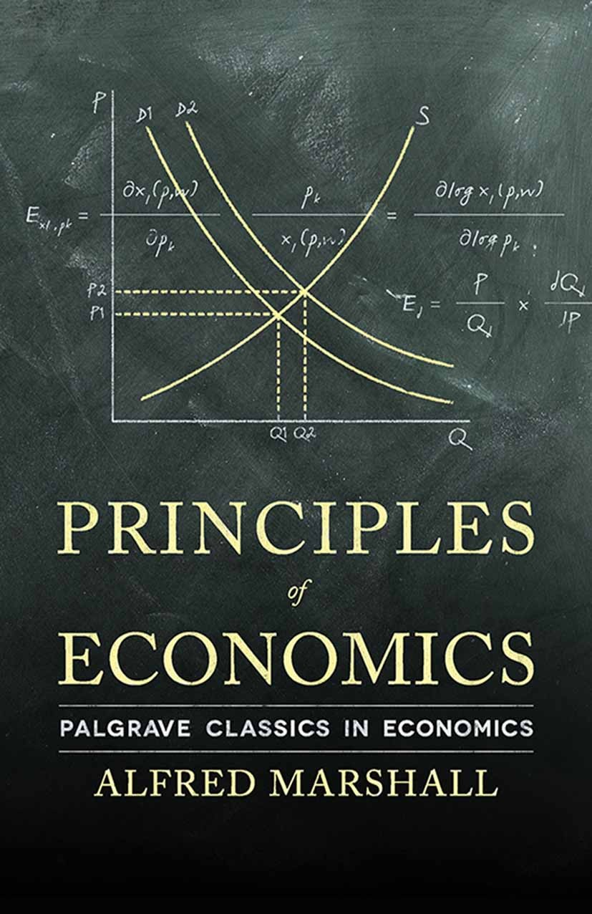

Principles of Economics
1.Structure
The book is typically divided into several key sections:
Introduction to Economics:
This section introduces basic concepts like scarcity, choice, and opportunity cost. It explains how individuals and societies allocate resources.Supply and Demand:
This is a core part of microeconomics, explaining how prices are determined in markets, how supply and demand interact, and how they reach equilibrium.Markets and Welfare:
Mankiw explains the efficiency of markets and the concept of consumer and producer surplus. It also introduces market failures like externalities.The Economics of the Public Sector:
This section covers government intervention in markets, tax policy, public goods, and welfare economics.Firm Behavior and Market Structure:
The book introduces various market structures (perfect competition, monopoly, oligopoly, etc.), exploring how firms make pricing and production decisions.The Economics of Labor Markets:
This part dives into the labor market, discussing wage determination, unemployment, and the role of human capital.Macroeconomic Data:
It introduces key macroeconomic indicators like GDP, unemployment, and inflation, explaining how they are measured and what they signify.The Real Economy in the Long Run:
This covers topics like productivity, economic growth, savings, and investment, focusing on the long-term determinants of wealth and growth.Money and Prices in the Long Run:
Mankiw discusses money, monetary policy, and the effects of inflation.Short-Run Economic Fluctuations:
This explores the business cycle, aggregate demand and aggregate supply, and how governments manage recessions or booms through fiscal and monetary policy.International Economics:
The book also touches on trade, exchange rates, and the global economy.2. Writing Style and Approach
Mankiw is known for writing in an engaging and accessible style. He simplifies complicated topics without oversimplifying, making economics more approachable for students. Real-world examples are frequently used to illustrate abstract concepts. Mankiw incorporates current events, policy debates, and everyday situations to explain economic principles. Graphs, charts, and diagrams are frequently used to visualize data and concepts like supply and demand, inflation, and trade-offs.
3.Core Concepts
Ten Principles of Economics:
Mankiw begins the book with these key principles, which summarize basic economic thought. Examples include: People face trade-offs. The cost of something is what you give up to get it (opportunity cost). Markets are usually a good way to organize economic activity. Governments can sometimes improve market.Market Forces:
The book thoroughly explains how markets function, focusing on supply and demand as core drivers of economic outcomes.Role of Government:
It explores government roles in regulating markets, addressing externalities, providing public goods, and redistributing income.Efficiency vs. Equity:
Mankiw discusses the trade-off between maximizing economic efficiency and achieving fair income distribution.Economic Growth:
The book emphasizes the importance of long-term growth in living standards, productivity, and technology.Inflation and Unemployment:
It explains the causes and consequences of inflation and unemployment, as well as how they interact with government policies.4. Educational Tools
Case Studies:
Every chapter includes real-world applications of economic theory.Problems and Exercises:
To reinforce learning, each chapter provides practice questions and problems that range from simple multiple-choice to more complex scenarios.Summary and Key Concepts:
Each chapter ends with a review of the key ideas, helping students remember important details.Glossary and Key Terms:
The book defines economic terms in simple language and lists them for easy reference.5. Who Is It For?
The book is aimed at university students in introductory economics courses. It’s often used in both economics and non-economics majors. It’s also a great resource for anyone looking for a broad and understandable introduction to economics.
6. Editions and Updates
Mankiw frequently updates the book to reflect the latest economic data, research, and policy debates. The most recent editions often incorporate discussions about global financial crises, shifts in monetary policy, and new developments in economic theory. The later editions have more integrated discussions about global events such as the 2008 financial crisis, rising income inequality, and the COVID-19 pandemic's economic effects.
7. Strengths
Clarity:
Mankiw excels at explaining difficult concepts in clear, straightforward language.Comprehensive Coverage:
The book provides a solid foundation in both micro- and macroeconomics, making it a one-stop resource for students.Real-World Applications:
It bridges theory with current events and practical applications, making the concepts more relatable.Graphical Representation:
Economic models are visually represented through charts and graphs, helping students grasp the quantitative aspects of economics.8. Criticism
Some critics argue that the book is too "mainstream" and doesn’t delve deeply into alternative or heterodox economic theories. While the book offers a general overview, more advanced students or professionals might find it lacking in depth on complex topics. Critics also note that it can be pricey as a textbook, although earlier editions or online versions can sometimes be more affordable.
9. Why It’s a Good Choice
"Principles of Economics" is highly regarded for its ability to introduce economic concepts to those new to the subject. Its combination of clear writing, real-life examples, and comprehensive coverage makes it a valuable learning tool. It balances theory with application, making it a versatile textbook whether you're studying for academic purposes or general knowledge.